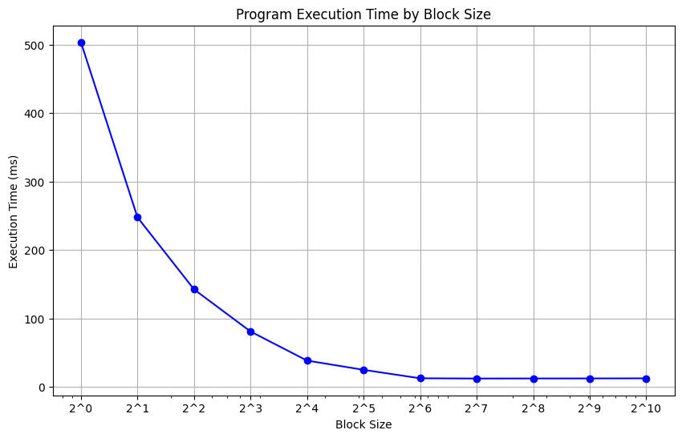

!nvidia-smiIn this tutorial, we’ll see the impact of block size on the performance of a CUDA kernel. We’ll use subprocess module in Python standard library to compile and execute a CUDA program which is defined in runtime.
Let’s first verify that the device has a NVIDIA GPU and CUDA.
We’ll use a simple vector addition kernel which will be executed in parallel by many threads in multiple blocks on the GPU. The whole program is defined as a string. We’ll replace BLOCKS_SIZE variable in runtime to try different block size values.
TEMPLATE = r"""
#include <stdio.h>
#include <stdlib.h>
#include <time.h>
#include <cuda.h>
__global__ void vector_addition_kernel(float *a, float *b, float *out, int N)
{
int i = blockIdx.x * blockDim.x + threadIdx.x;
if (i < N)
{
out[i] = a[i] + b[i];
}
}
int main(void)
{
const int N = 1 << 28; // Number of elements in arrays
float *a, *b, *out;
float *a_d, *b_d, *out_d;
int BLOCK_SIZE = 1;
int NUM_BLOCKS = N / BLOCK_SIZE + (N % BLOCK_SIZE == 0 ? 0 : 1);
dim3 BLOCK_SIZE_DIM3 = dim3(BLOCK_SIZE, 1, 1);
dim3 NUM_BLOCKS_DIM3 = dim3(NUM_BLOCKS, 1, 1);
size_t size = N * sizeof(float);
// Allocate memory
a = (float *)malloc(size);
b = (float *)malloc(size);
out = (float *)malloc(size);
cudaMalloc(&a_d, size);
cudaMalloc(&b_d, size);
cudaMalloc(&out_d, size);
// Fill arrays with random values
for (int i = 0; i < N; i++)
{
a[i] = rand() / (float)RAND_MAX;
b[i] = rand() / (float)RAND_MAX;
}
cudaMemcpy(a_d, a, size, cudaMemcpyHostToDevice);
cudaMemcpy(b_d, b, size, cudaMemcpyHostToDevice);
clock_t start = clock();
vector_addition_kernel<<<NUM_BLOCKS_DIM3, BLOCK_SIZE_DIM3>>>(a_d, b_d, out_d, N);
cudaDeviceSynchronize();
clock_t end = clock();
double elapsed_time_ms = 1000 * (double)(end - start) / CLOCKS_PER_SEC;
printf("Elapsed time: %f ms\n", N, elapsed_time_ms);
cudaMemcpy(out, out_d, size, cudaMemcpyDeviceToHost);
// cleanup the host memory
free(a);
free(b);
free(out);
cudaFree(a_d);
cudaFree(b_d);
cudaFree(out_d);
}
"""import subprocess
import re
import matplotlib.pyplot as plt
def run_cuda_code(code: str):
# Save the generated CUDA code to a file
with open("program.cu", "w") as f:
f.write(code)
# Compile the CUDA code
subprocess.run(["nvcc", "-o", "program", "program.cu"], check=True)
# Run the compiled executable and capture its output
result = subprocess.run(["./program"], capture_output=True, text=True)
# Extract the execution time from the output
execution_time = float(re.search(r"Elapsed time: (\d+\.\d+) ms", result.stdout).group(1))
return execution_time
block_sizes = [2**i for i in range(11)]
execution_times = []
for block_size in block_sizes:
code = TEMPLATE.replace("int BLOCK_SIZE = 1;", f"int BLOCK_SIZE = {block_size};")
execution_time = run_cuda_code(code)
execution_times.append(execution_time)import math
plt.figure(figsize=(10, 6))
plt.plot(block_sizes, execution_times, marker='o', linestyle='-', color='b')
plt.xscale("log")
plt.title('Program Execution Time by Block Size')
plt.xlabel('Block Size')
plt.ylabel('Execution Time (ms)')
plt.xticks(block_sizes, labels=[f"2^{int(math.log(block_size, 2))}" for block_size in block_sizes])
plt.grid(True)
plt.show()
The figure above shows a decrease in execution time with bigger block size until it hits 64 threads. Beyond this point, there’s a noticeable plateau, signifying no further gains in speed.